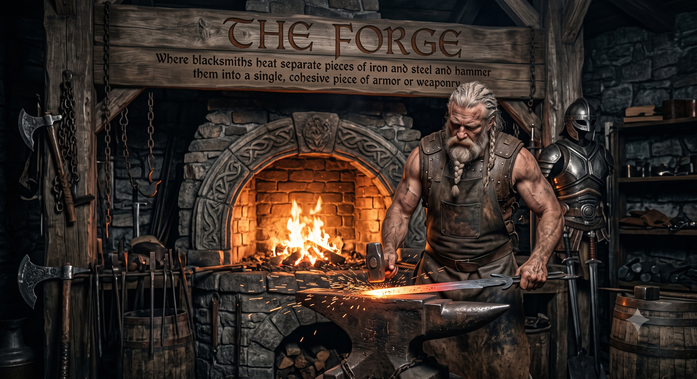

Three pieces from the same "thinking out loud" list (2026-08-15), mocked up together so you can react to them as one visual direction rather than three separate asks. Nothing here is built — this is the sign-off step before any of it is.
Right now every tool name renders in the app's own plain system font, same weight as everything else — "The Arcaneum" reads exactly like "Settings." A themed display font just for tool names/headings (never body text — that stays the readable system font) would give Skyrim mode its own real visual identity, not just a color swap. Five real, license-free candidates below, same sample text so they're easy to compare side by side. Loaded from Google Fonts for this preview only — the real build self-hosts whichever one you pick.
A subtle themed texture behind Home's own background — not a busy illustration competing with the cards, just enough atmosphere that Skyrim mode feels like its own space. Very low opacity (this demo is ~10%) so every card/text stays exactly as readable as it is today; this is CSS-only (gradients + a faint diagonal line texture), no image file needed, so it doesn't add another Gemini-generation round the way the banners did.
A themed help/onboarding page, reusing the release banner art (the real ones already made — this mockup's own banner placeholder below stands in for e.g. The Forge's actual release banner) with real lore + a genuinely useful "what this tool actually does" explanation per tool, browsable like a table of contents. One sample page below (The Forge), plus what the table of contents for the whole book would look like.

Functional name: Merge Plugins
Where raw materials are fused into one — a forge doesn't create from nothing, it takes what already exists and combines it into something stronger. That's the whole idea behind this tool: your plugins already exist, already work, already have their own records. The Forge doesn't rewrite any of that — it just fuses several of them into a single file, so they take up one load-order slot instead of many.
Table of contents (every tool gets one page, same shape as above):